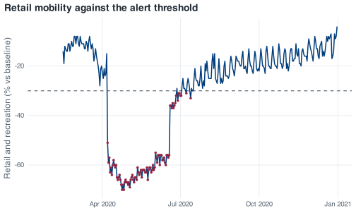

10 Writing functions
Analysis scripts commonly grow by copy-paste, and the failure mode when they do is a quiet one. You change one copy, forget the other two, and the script keeps running and keeps producing a number. The number is now wrong, and nothing on screen indicates it.
This chapter covers the alternative: moving the repeated block into a function.
10.1 The rule of three
Start with a question for the mobility data: on how many days did retail and recreation activity fall more than 30% below its January baseline?
The answer is 88 days. Asking the same question at a stricter cut-off means copying the block and changing the number.
Also try a looser cut-off, because it shows whether the answer is sensitive to where you draw the line.
There are now three blocks, returning 164 days at the loose end and 48 at the strict end, and the analysis is sound as it stands. The problem appears a week later, when you decide the dates matter more than the count and change nrow() to pull(date) in the first block. Block one now answers a different question from blocks two and three, and nothing in the script records that they have diverged.
Once you have copied the same block of code a third time, write a function. Copies that are edited at different times drift apart, and the more copies there are, the more likely that becomes.
10.2 Anatomy
A function has four parts, and R makes all four visible in the definition:
mobility_alert <- function(covid_data, threshold = -30) {
covid_data %>%
filter(retail_and_recreation_percent_change_from_baseline < threshold) %>%
pull(date)
}The name is mobility_alert. It goes on the left of <-, exactly like any other assignment, because in R a function is a value you store in a variable. There is nothing special about the name as far as R is concerned; f would work equally well. Name it after what it returns or what it does, so that a call to it can be read without looking up the definition. This is the naming rule from Chapter 2 applied to a function rather than to an ordinary object.
The arguments are covid_data and threshold, in the parentheses after function. Inside the body they behave as ordinary variables. threshold has a default value of -30, so a caller who has no opinion can leave it out.
The body is everything between the braces. It is ordinary R code, and it can use the arguments freely.
The return value is the value of the last expression evaluated. There is no return keyword here and none is needed. R functions return their last expression automatically, so pull(date) is the answer. return() does exist and works wherever you put it; the idiom in R is to reserve it for an early exit, a check at the top of a function that refuses nonsense input before any of the real work happens.
A call with the default threshold:
The call flags 88 days, running from 7 April to 13 July. The 7th of April is the first day of the circuit breaker, so the flagged period begins on the day the policy changed.
The function also inherits a decision made earlier. Because the body uses filter(), the 24 missing values in the retail column are dropped rather than returned as NA rows, which gives 88 days rather than the 112 that base-R subscripting would return. That decision was made in the chapter on missing data and now applies to every call.
ggplot(covid, aes(date, retail_and_recreation_percent_change_from_baseline)) +
geom_hline(yintercept = -30, linetype = "dashed", colour = nus_colours[["muted"]]) +
geom_line() +
geom_point(
data = filter(covid, date %in% alert_days),
colour = nus_colours[["crimson"]], size = 0.9
) +
labs(
x = NULL,
y = "Retail and recreation (% vs baseline)",
title = "Retail mobility against the alert threshold"
)
#> Warning: Removed 24 rows containing missing values or values outside the scale range
#> (`geom_line()`).
mobility_alert() at its default threshold. Marked days run from the first day of the circuit breaker to mid-July.The warning about 24 rows removed is the January and early-February gap in the mobility series, and it should appear every time you plot this column. If it ever stops appearing, something upstream has filled those values in and you want to know about it.
10.3 Default arguments and the sign convention
threshold = -30 is more than a convenience here, because of the sign convention in this dataset.
Google’s mobility columns are percentage change from baseline. A fall in activity is a negative number. Retail bottoms out at -70 on 24 April. Residential goes the other way and peaks at +55 on 1 May, because when everything else empties out, people are at home. So “a drop of more than 30%” is < -30, and thinking in magnitudes instead of signs leads you to type 30.
Before you run the next chunk, write down a number. mobility_alert(covid, threshold = 30) asks for the days on which retail mobility was below 30. How many of the 345 days do you think come back?
The answer is 321 days. Retail mobility is below +30 on almost every day of the year, so the filter keeps nearly all the rows, and the first “alert day” is 15 February, before the series had moved. There is no error and no warning: the result is a plausible vector of dates answering a different question from the one intended.
A default value records the decision about the sign once, in one place, and every call that accepts it inherits that decision. A caller who wants a different threshold has to write the override, which then appears in the code where it can be checked.
If you want to be stricter than a default, you can check the argument and refuse:
mobility_alert <- function(covid_data, threshold = -30) {
if (threshold > 0) {
stop("`threshold` should be negative. Mobility is measured as percentage change ",
"from baseline, so a drop of 30% is -30, not 30.", call. = FALSE)
}
covid_data %>%
filter(retail_and_recreation_percent_change_from_baseline < threshold) %>%
pull(date)
}
mobility_alert(covid, threshold = 30)
#> Error:
#> ! `threshold` should be negative. Mobility is measured as percentage change from baseline, so a drop of 30% is -30, not 30.call. = FALSE suppresses the “Error in mobility_alert(…)” prefix, which adds nothing when the message already identifies the problem. Whether to add a check like this is a judgement call: checks cost lines and can themselves be wrong. Add them where a wrong answer would otherwise be silent, as it is here, and leave them out where the code would fail anyway.
10.4 Variables created inside a function
A variable created inside a function does not exist after the function returns. R evaluates the body in a fresh environment that is thrown away on the way out.
peak_day <- function(covid_data) {
worst <- covid_data$date[which.max(covid_data$daily_cases)]
worst
}
peak_day(covid)
#> [1] "2020-04-20"The function creates worst, returns its value, and discards the name on the way out. Asking for worst at the console afterwards therefore fails:
worst
#> Error:
#> ! object 'worst' not foundThe error is the intended behaviour. If every function left its working variables behind, a script with thirty functions in it would accumulate names whose current values depend on which function ran last. Scope is what lets you use a working variable like worst inside a function without checking what else in the session has that name. Short-lived variables like this one should be named after their role, as worst is; a placeholder such as tmp tells the next reader nothing about what the variable holds.
The relationship is one-way, though. A function can read variables from outside itself. If the body mentions a name it does not define, R looks in the environment where the function was written, which is usually the global environment. That is how mobility_alert() can call filter() at all. It is also how a function can depend on an object in the global environment without that dependency appearing in its arguments.
10.5 Stale globals, and why you restart R
The same mechanism has a version that produces no error at all.
Consider a loop over four months that assigns to a variable at the top level of the script:
for (m in c("2020-09-01", "2020-10-01", "2020-11-01", "2020-12-01")) {
month_data <- covid %>% filter(month == as.Date(m))
cat(format(as.Date(m), "%B"), "mean daily cases:",
round(mean(month_data$daily_cases), 1), "\n")
}
#> September mean daily cases: 31.8
#> October mean daily cases: 8.1
#> November mean daily cases: 6.8
#> December mean daily cases: 12.3The loop prints four correct numbers, and there is nothing wrong with it. When it finishes, though, month_data is still in the global environment, holding whatever the last iteration put there, which is December.
Further down the same script, a separate calculation about September reuses month_data:
The heading says September, but the number printed is December’s. Nothing errors and nothing warns, and 12.3 is a believable figure for a quiet month, so there is nothing in the output to signal the mistake. A run from top to bottom therefore records December’s figure under September’s label.
In a fresh session, month_data does not exist, and the second calculation fails like this:
month_dataError: object 'month_data' not foundThe code stops with an error instead of returning a number computed from a stale object. That is the reason for restarting R regularly: it turns this class of mistake from a wrong answer that looks right into a failure you can see.
Clearing the workspace is not a substitute for a restart. rm(list = ls()) removes the objects in the global environment, but the rest of the session survives it: attached packages, options() settings, open connections and .Random.seed all keep their current values. Restarting R clears all of these, which is why a fresh session is the only reliable way to reproduce a run.
The structural fix is the subject of this chapter. If the calculation lives inside a function, there is no top-level month_data to go stale, because the variable ceases to exist when the function returns.
10.6 Returning more than one thing
mobility_alert() returns a vector, which is fine because it has one thing to say. Most summaries have several. Suppose you want, for a given month: how many days, how many cases, the daily mean, the peak and when it happened, and how many days were classed High.
A list is the natural container for several values at once, and it works:
month_summary_list <- function(covid_data, which_month) {
start <- floor_date(as.Date(which_month), "month")
d <- filter(covid_data, month == start)
list(
month = start,
days = nrow(d),
total = sum(d$daily_cases)
)
}
month_summary_list(covid, "2020-04-01")
#> $month
#> [1] "2020-04-01"
#>
#> $days
#> [1] 30
#>
#> $total
#> [1] 15243Return a one-row tibble instead:
month_summary <- function(covid_data, which_month) {
start <- floor_date(as.Date(which_month), "month")
if (!start %in% covid_data$month) {
stop("No data for ", format(start, "%B %Y"), ". The data covers ",
format(min(covid_data$month), "%B %Y"), " to ",
format(max(covid_data$month), "%B %Y"), ".", call. = FALSE)
}
covid_data %>%
filter(month == start) %>%
summarise(
month = start,
days = n(),
total = sum(daily_cases),
mean_daily = round(mean(daily_cases), 1),
peak = max(daily_cases),
peak_date = date[which.max(daily_cases)],
high_days = sum(severity == "High")
)
}
month_summary(covid, "2020-04-01")
#> # A tibble: 1 × 7
#> month days total mean_daily peak peak_date high_days
#> <date> <int> <dbl> <dbl> <dbl> <date> <int>
#> 1 2020-04-01 30 15243 508. 1426 2020-04-20 18For April the summary reports 30 days, 15,243 cases, a peak of 1,426 on the 20th, and 18 days classified High.
The reason for the tibble is composition. Sooner or later you will want all twelve months, not one, and a stack of one-row tibbles is a table:
list_rbind(list(
month_summary(covid, "2020-04-01"),
month_summary(covid, "2020-05-01")
))
#> # A tibble: 2 × 7
#> month days total mean_daily peak peak_date high_days
#> <date> <int> <dbl> <dbl> <dbl> <date> <int>
#> 1 2020-04-01 30 15243 508. 1426 2020-04-20 18
#> 2 2020-05-01 31 18715 604. 932 2020-05-01 31The same move with lists does not work:
list_rbind(list(
month_summary_list(covid, "2020-04-01"),
month_summary_list(covid, "2020-05-01")
))
#> Error in `list_rbind()`:
#> ! Each element of `x` must be either a data frame or `NULL`.
#> ℹ Elements 1 and 2 are not.list_rbind() requires data frames, and the restriction reflects a real difference. A plain list carries no column types and no assurance that two lists have the same names in the same order, so stacking them is ambiguous. A one-row tibble carries both, so a function that returns one row composes with itself: twelve calls and one list_rbind() give the year as a table.
10.7 The guard clause
The if (!start %in% covid_data$month) stop(...) at the top of month_summary() is a guard clause: a check that runs before the real work and exits early if the inputs make no sense.
month_summary(covid, "2021-03-01")
#> Error:
#> ! No data for March 2021. The data covers January 2020 to December 2020.Without the guard, filter() returns zero rows and summarise() runs on nothing. The version below has the guard removed:
month_summary_unguarded <- function(covid_data, which_month) {
start <- floor_date(as.Date(which_month), "month")
covid_data %>%
filter(month == start) %>%
summarise(
month = start,
days = n(),
total = sum(daily_cases),
peak = max(daily_cases),
peak_date = date[which.max(daily_cases)]
)
}
month_summary_unguarded(covid, "2021-03-01")
#> Error in `summarise()` at magrittr/R/pipe.R:136:3:
#> ℹ In argument: `peak_date = date[which.max(daily_cases)]`.
#> Caused by error:
#> ! `peak_date` must be size 1, not 0.
#> ℹ To return more or less than 1 row per group, use `reframe()`.R does stop here, but consider what it stops on. The message concerns peak_date having size 0, and it suggests reframe() as the fix. Neither refers to the actual problem, which is that the requested month is not in the data, so the message points you at the wrong part of the documentation.
Drop peak_date from that function and nothing is the wrong size, so the call succeeds:
covid %>%
filter(month == as.Date("2021-03-01")) %>%
summarise(
days = n(),
total = sum(daily_cases),
mean_daily = mean(daily_cases),
peak = max(daily_cases)
)
#> Warning: There was 1 warning in `summarise()`.
#> ℹ In argument: `peak = max(daily_cases)`.
#> Caused by warning in `max()`:
#> ! no non-missing arguments to max; returning -Inf
#> # A tibble: 1 × 4
#> days total mean_daily peak
#> <int> <dbl> <dbl> <dbl>
#> 1 0 0 NaN -InfThe result is zero days, zero cases, a mean of NaN and a peak of -Inf, returned as a one-row tibble that will stack alongside eleven real months without complaint. The warning from max() is the only indication, and warnings are easy to miss in a long run.
That is what the guard provides: a message naming the month you asked for, stating that it is not present, and giving the range that is. An error message is most useful when it names the input that caused the failure and the values that would have worked.
One more point about month_summary(): it requires a full date, "2020-09-01" rather than "2020-09". That is as.Date()’s behaviour rather than a choice made in the function, and it fails with an error:
as.Date("2020-09")
#> Error in `charToDate()`:
#> ! character string is not in a standard unambiguous formatAn error is the appropriate response here. A month string with no day does not identify a date, and as.Date() stops rather than supplying one.
10.8 Exercises
Exercise 10.1 (Generalise the alert) mobility_alert() only ever looks at the retail and recreation column. Rewrite it so the caller can choose which mobility series to check, keeping retail as the default so that existing calls still work.
Then use your version to answer: how many days did workplace mobility fall below -60, and how many did parks? Look at the deepest workplace days in particular and see whether you can explain them.
Passing a column name into a dplyr verb from inside a function needs the curly-brace operator, { }, around the argument. Search the tidyverse documentation for “programming with dplyr” if you want the full story, or wrap the argument and see what happens.
Exercise 10.2 (Add a judgement to the summary) Extend month_summary() with one more column, verdict, that reads "Escalate" when the month had more than five High days and "All clear" otherwise.
Run it on September 2020 and on April 2020 and check that both verdicts are what you expect from the case counts. Then decide whether five is a defensible cut-off, and make it an argument if you conclude it is not.
high_days is already computed inside the summarise() call, but you cannot refer to a column you are creating in the same summarise() in all versions of dplyr. Adding a mutate() after the summarise() is the reliable way, and if_else() handles the two-way choice.